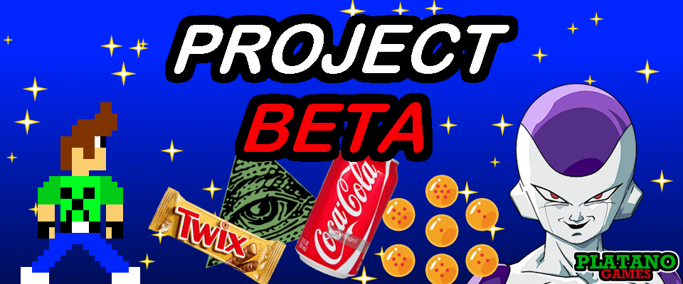

From the Platano archive
Project Beta
2015.
An early Nintendo DS homebrew experiment preserved as a playable piece of Platano Team history.
01 Browser emulator
From the origins.
To the present.
Experience this archived project directly in your browser. A physical keyboard is recommended.

Click the emulator, then use your keyboard to play.